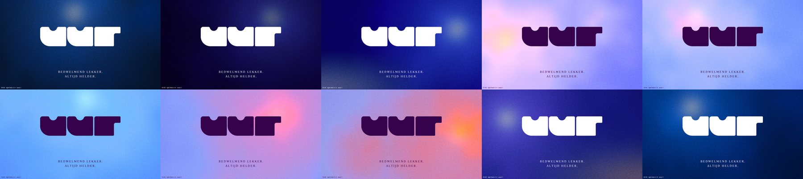
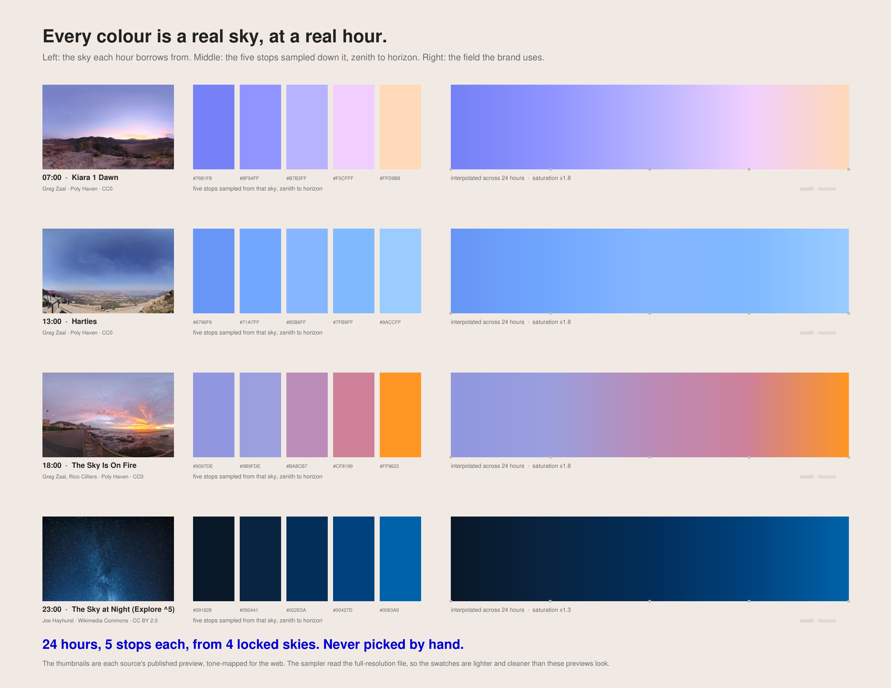
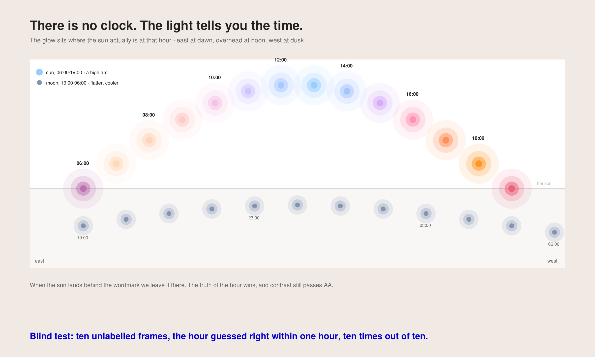
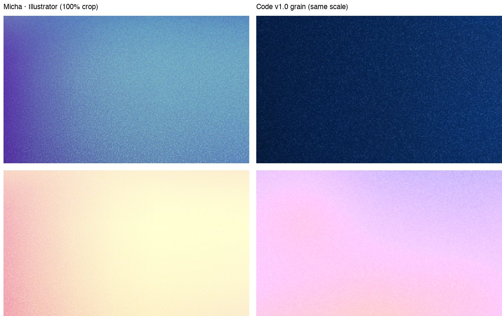
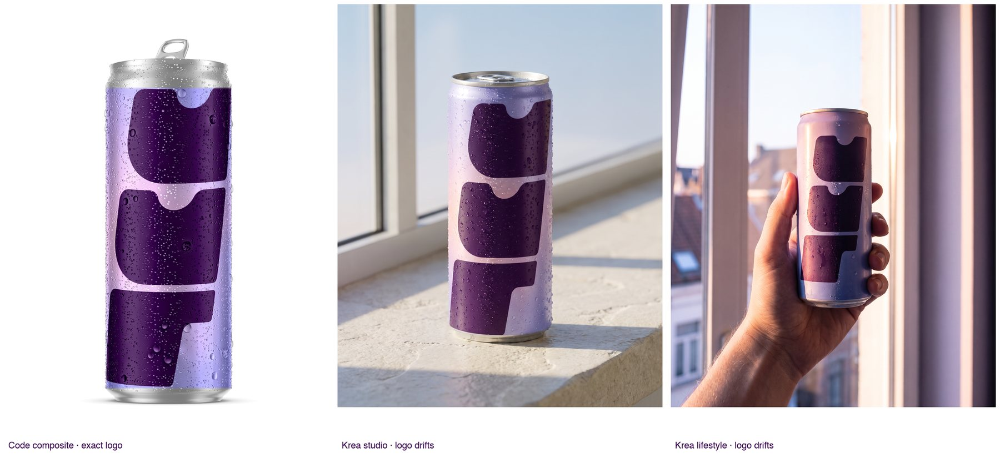
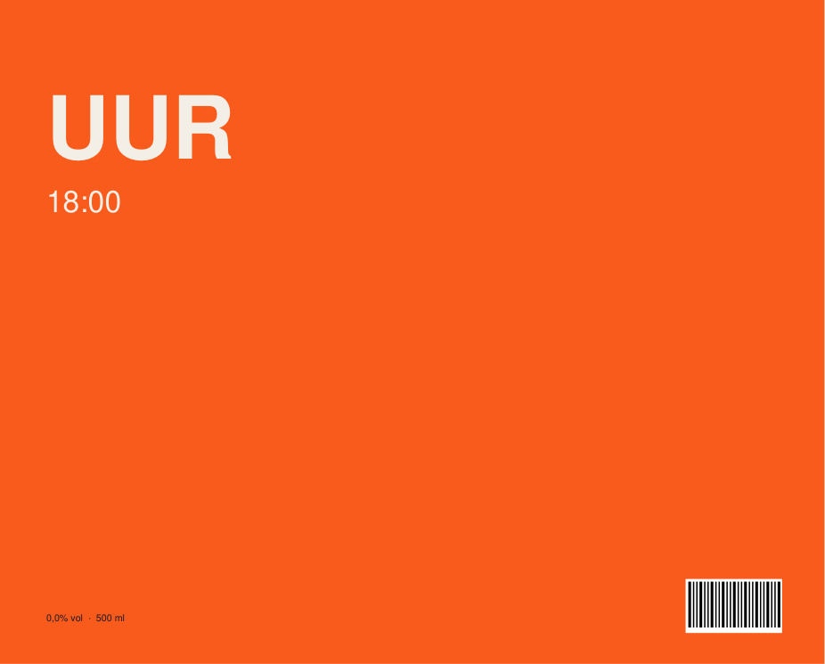
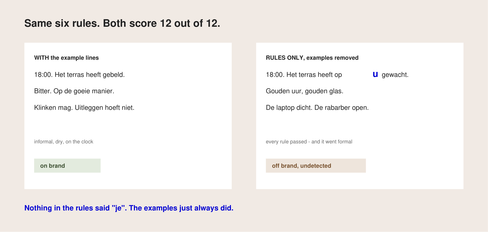
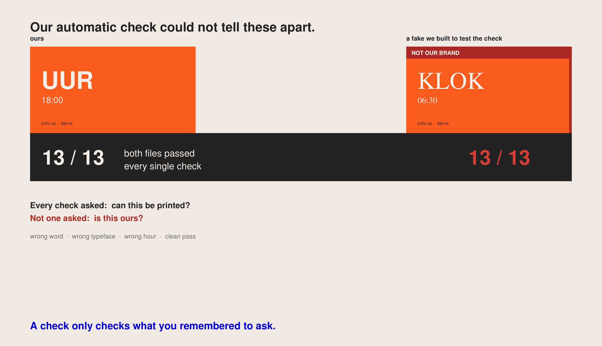

Everybody is selling the question. Nobody will tell you what the answer looks like. So we invented a drinks brand, asked AI to make real things with it — packaging, campaign copy, product shots — and watched where it broke.

Four tests.
Three surprises.
One uncomfortable ending.
You cannot test this on a client. So we designed UUR — Dutch for hour — a non-alcoholic drinks brand named after the time of day. Real wordmark, real palette, real tone of voice, real packaging. Designed properly, by a designer, the normal way.
Then we rebuilt it as something a machine can read, and started asking AI to make things with it.

Owning the brand means we can publish the failures.
UUR is named after the time of day — 07:00, 18:00, 23:00. That is easy to say on a strategy slide and hard to make real. A logo that changes every hour becomes a gimmick within a week.
So we took the time out of the logo. The wordmark never moves. Everything that changes lives in the background — and it changes because of something true, not because a designer felt like it.
Every hour of the day borrows its colour from a photograph of an actual sky at that actual hour. Dawn comes from a South African sunrise. Midday from a clear blue afternoon over a lake. The 18:00 orange is a sky that was genuinely on fire. Midnight is a Milky Way photographed in Preston.
We sample five colours from each photograph, from the top of the sky down to the horizon, then let the system interpolate the other twenty hours between them. Nobody picks a hex value by hand, ever.

There is one deliberate lie in there, and we declare it: the hue is measured, the saturation is designed. A real sky is duller than a brand needs, so we push the saturation up — almost double by day. At night we barely touch it, because night goes neon almost immediately.
Hue is measured. Chroma is designed. Both are written down.
There is no clock icon anywhere in this brand. Instead the light source in the background sits where the sun genuinely is at that hour: low in the east at seven, overhead at one, low in the west at seven in the evening. After that the moon picks up the same journey on a flatter, cooler arc.

Four times a day the sun lands directly behind the wordmark. We leave it. Moving it would make a prettier frame and a dishonest one — and the contrast still passes accessibility standards, which we check at the exact spot the logo sits rather than as an average.
The test that convinced us: we showed ten unlabelled frames to someone who had never seen the brand and asked what time it was. Ten right, every one within an hour.
No clock. The light tells you the time, and people can read it.
The texture over everything came out of Illustrator the normal way: a two-colour gradient, Pointillize at cell size 3, Overlay at 32%. A recipe in someone's hands.
We rebuilt it as code, then tuned it against the original board until it matched — about 80 to 85%, honestly measured, not claimed. It now takes its two colours from whichever palette stops are closest to the frame, lifts them until they have enough life, and goes slightly heavier at night than by day because that is what looked right.

This is the part worth stealing. Gradients, grain, light, motion — the parts of a brand that feel the most designed — are exactly the parts an image model destroys first. Written as code they survive intact, come out identical every time, and can still be varied endlessly.
The parts that feel hand-made are the parts to write as code.
The wordmark, drawn once and never redrawn. The ink — aubergine by day, white by night, chosen by whichever has more contrast where the logo actually sits. And the law: never blurry, because in this category blur reads as alcohol.
The hour. The seed. Layout, photography, copy, motion, and the prefix words — v·uur, k·uur, m·uur — a naming system hiding inside a four-letter name.
How much we push the colour. How strong the grain runs. Where the light sits. All written as parameters in the kit, so anyone — a person or a machine — can rebuild the exact frame or make a new one that still belongs.
A small fixed core, a wide playground, and the rules of the playground written down.
Palette. 232 unique open-sky HDRIs harvested from Poly Haven (CC0), each carrying a timestamp and GPS so the local solar hour can be calculated — that is what makes "a real sky at a real hour" a checkable claim rather than a story. Night was the hard part: those HDRIs are exposure-normalised, so moonlit skies look like daylight. We harvested 597 night photographs from Wikimedia Commons instead, filtered to free licences, and classified them into blue hour and deep night.
Four anchors locked: 07:00 Kiara 1 Dawn, 13:00 Harties, 18:00 The Sky Is On Fire (all Greg Zaal / Rico Cilliers, Poly Haven, CC0), 23:00 The Sky at Night (Joe Hayhurst, CC BY 2.0). Three supporting blue-hour keyframes fill the twilight. Interpolation runs cyclic in OKLCh along the shortest hue path — the first version mixed violet to teal straight through grey and produced muddy transitions at 06:00 and 20:00.
Lowest measured contrast is 4.68:1 at 19:00, which passes AA. The generator produces the same checksum on every rerun.
Light field. The sun follows x = 0.08 + 0.84t, y = 0.62 − 0.52·sin(πt) for t = (hour−6)/13; the moon takes a flatter arc over 19:00–06:00. Colours come only from that hour's five palette stops, mapped as a distance ramp from the light source and warped by noise. Same hour and seed always give the same pixels.
Grain. Rasterised at four times the reference width because Illustrator renders effects above artboard resolution. Luma-neutral by design: it changes texture, never the average colour. Where the raster code cannot run — in SVG or CSS — there is a declared approximation using feTurbulence, and output made that way has to be labelled as approximate.
It understood the brand beautifully. The mood, the light, the colour, the feeling of the thing — all there. And it got the logo wrong five times out of six.

This is the part everyone has felt and nobody has measured. An image model is not reproducing your brand; it is producing something that resembles your brand. Close enough to pass a glance, never close enough to print.
Never let AI draw your logo. Build the artwork, then wrap it onto the thing.
Six generated cans, each supplied with the master logo file as a visual reference. We scored each result on whether the wordmark geometry matched the master — not whether it looked nice. One of six matched.
The fix is unglamorous and works: we build the flat label artwork from the brand kit, then wrap that real file onto the can's measured geometry. The logo is then correct because it is the logo, not an impression of one. Re-rendering the same view twice produced a byte-identical image — an exactness no generative route can offer.
We took the packaging specification out of the brand kit — the dimensions, the margins, the barcode rules — and asked AI to make the label anyway. We expected a mess. We got something worse.
It produced a label that looked entirely credible. Correct claims, sensible margins, legal text at a legal size. It even derived the minimum legal type size from actual EU food regulation, and cited the regulation.
It also invented a barcode that would genuinely scan — with a valid check digit — belonging to nobody. And a full nutrition panel of plausible, completely fictional numbers.

A gap in your brand kit does not produce obvious mistakes. It produces confident fakes.
We gave a fresh AI — in a separate session, with no access to our other work — only the identity layer: colours, a note on typography, the required claims. No dimensions, no margins, no barcode rules. It had to infer the rest from how drinks packaging normally works, then produce a print-ready file.
Of the things a printer checks, it reached 7 of 10 from convention alone: bleed, type sizes, the required claims, the colours. The 3 it could not reach were the trim size, the safe margin, and the clear space around the barcode — precisely the three that decide whether a file can actually be printed and scanned.
The useful sentence for a brand team: an identity-only brand kit gets you most of the way and fails on exactly the parts that stop production. And it fills its own gaps with inventions that look right.
Our tone of voice has six rules and thirty example lines — fifteen on-brand, fifteen off. We deleted the examples, kept the rules, and asked two AIs to write campaign copy.
Every rule passed. Both of them. Short lines, no clichés, no health claims, no exclamation marks — a perfect score on everything we could check automatically.
The one without examples started addressing customers as "u". The formal form. On a young Flemish drinks brand.
Nothing in the rules said to use the informal "je" — the examples just always did. Nobody had ever written it down, because nobody needed to.

Your examples carry everything you never thought to write down.
Two fresh AIs in separate sessions, same brief: twelve new Dutch campaign lines. One got the rules plus the thirty examples; the other got the rules alone. We first verified neither had simply copied our examples, then scored every line against the six voice rules.
Both scored 12 out of 12. The difference was invisible to the checker: the formal address form, lines running about 15% longer, and the brand's full-stop rhythm used in 11 of 12 lines instead of 6 — overdone to the point of mannerism.
Two things follow. First, a well-written prohibition ("never preachy — avoid these words") needs no examples; that is a real saving. Second, examples are not there for compliance at all. They carry the unwritten conventions — how you address people, how long a line runs, how often you use your own signature move.
Honest limits: one run per condition, and the address-form finding rests on a single instance. Suggestive, not conclusive. Both AIs were the same model, so a weaker model might well fail the rules too.
It is not one question with one answer. Go through your brand piece by piece and ask something much more boring and much more useful: for this specific thing — who makes it, and who checks it?
There are only three honest answers.
Not "is my brand AI-ready?" but "who makes this, and who checks it?"
Logo, colours, typefaces, layouts. The machine places your actual asset. It cannot drift, because nothing is being invented.
Who checks it: a script. Nobody needs to look.
Gradients, grain, light, motion — the parts that feel most "designed" and are the first to lose their identity in an image model. Written as code, they come out exact and endlessly variable.
Who checks it: a script, plus you once, to approve the look.
Products in scenes, lifestyle imagery, copy. Faithful, never exact. This is where AI earns its place — and where somebody has to put their name to it.
Who checks it: a named person. Not "the team".
Fill that in for every element and you get a profile instead of a verdict. Your logo might be fully ready. Your packaging might be ready once someone writes down the technical drawing. Your campaign imagery might need a human signature forever. That is not a failure — that is an answer you can act on.
A brand is not AI-ready or not. It is ready per element, with a name against each one.
We filled this in for all fourteen parts of UUR: wordmark, small-size cut, micro mark, colour tokens, light field, grain, type system, packaging specification, flat artwork, pack mockup, tone of voice, lifestyle imagery, motion. Each row carries who makes it, who checks it, the quality bar, a named owner — and how much evidence we actually have.
Filling it in is what exposed our own gaps. Motion has no evidence and no owner: the one part of the brand that is still just a claim. Our typeface licensing is not closed. We print those rather than rounding them up, because a map that hides its empty rows is marketing.
The full table, with the measured evidence per row, is in the full record.
We were pleased with ourselves. We had built an automatic check that confirmed our packaging file was correct — thirteen checks, all passing. We put it on this page and called it the production file.
Then Micha looked at it and asked: would a label that isn't ours pass this too?
We built one to find out. Hot pink. A serif typeface. The wordmark changed to read "KLOK". Then we corrected only the colour and ran it again.
It passed all thirteen checks. Clean.

Because every check we had written asked can this be printed? — the right dimensions, the right margins, the legal text large enough. Not one of them asked is this our brand? We had automated the easy question and assumed it answered the hard one.
An automatic check only checks what you remembered to ask.
The checker now answers two separate questions and never adds them together. Can this be printed? — thirteen checks on dimensions, margins, type sizes, claims, barcode clearance. Is this our brand? — three checks comparing the artwork against the source files: the wordmark against the master drawing, the typeface against the approved list, the colours against the brand kit itself.
The second set has to compare against the real assets. Our colour check had been comparing the artwork to a value copied into the specification — which was a placeholder. It was marking its own homework.
Scored honestly, our showcase file is 13 out of 13 on printable, 1 out of 3 on ours: it says UUR, but in Helvetica, with placeholder colours. The caption admitted the stand-ins in words while the headline number contradicted it.
We kept the fake labels as permanent tests. A check that has never been shown to fail something is not a check.
Not advice — a shopping list. Your logo as a source file, not a PDF of guidelines. Your packaging technical drawing as data. Your tone of voice as prohibitions and examples. The market you sell in, which unlocks everything regulation already decides for you.
The honest half. Some things should never be generated: exact artwork inside a rendered photograph, legal microcopy, packaging structure. Knowing that saves more money than any efficiency gain, because it is where brands quietly ship something wrong.
The one finding we did not expect, and the one most worth money: where your brand kit is silent, AI does not stop. It invents something plausible and moves on. A scannable barcode that is not yours. A nutrition panel of fiction. A formality that breaks your tone. None of it looks like an error.
The risk is not AI making something ugly. It is AI making something wrong that looks right.
Four tests done, two to go. We still owe ourselves a motion test, and a Flemish reader has to judge twenty-four lines of copy that no machine can score. The packaging file needs the real wordmark and the real colours before it is genuinely ours.
We publish the gaps because the whole point was to replace a slogan with something that can be checked — including by you.